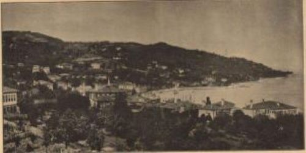

Tarihin İzinde Bir Şehir
Rize'nin tarihi öncesi hakkında bilgilerimiz sınırlıdır. Yöreye hakim olan orman dokusu nedeniyle, Rize'nin tarih çağları ile ilgili bilgilere ışık tutacak arkeolojik bulgular da bugüne kadar ortaya çıkarılamamıştır. Rize'nin tarihi ancak komşu illerin ve bölgelerin tarihleri ile bağlantılı olarak ele alınabilmiştir.
Eski dönemlerde burada Kolhisliler yaşamaktaydı.

Rize, 1204'te Trabzon İmparatorluğu'na bağlanmıştır. 1470'te Fatih Sultan Mehmet tarafından fethedilmiştir.
Spesifik olarak Rize'den bahseden kaynaklara 19. yüzyılda rastlanmaktadır. 18 ve daha sonraki yüzyıllarda yazılmış kaynaklarda Rize'de derebeylik yapmış Tuzcuoğulları ailesinden bahsetmektedir. II. Mahmud'a birkaç kez isyan eden bu aile, 1832'de Tuzcuoğlu İsyanı'nı başlatmıştır. Tuzcuoğulları'na vergi veremeyen köylüler, topraklarını Tuzcuoğulları'na devretmek ve onlar için çalışmak zorundaydı. Rize'deki bir saray bu aileye aftedilmektedir. Tuzcuoğulları ile rekabet halinde olan Trabzonlu Memişoğulları, Memişoğlu ayaklanmasını başlatmıştır. İki aile arasındaki kan davasında birçok üye öldükten sonra Tuzcuoğulları'nın başlıca aile üyeleri teslim olmuş ve Rusçuk-Varna gibi şehirlere sürülmüştür.
Gezgin P. Minas Bijişkyan, bölgede portakal ve limon yetiştirildiğini yazmıştır.
Rize 19. yüzyılın ikinci yarısında Batum'un Ruslara bırakılmasının ardından, Trabzon Vilayetine bağlı Lazistan Sancağının merkezi olmuş, Cumhuriyet döneminde il merkezi olmuştur. I. Dünya Savaşı'nda yaklaşık iki yıl süren Rus işgalinin ardından özellikle çay ekiminin yaygınlaşması ile önemli bir gelişme göstermiştir.
Rize'nin Demografik ve Ekonomik Göstergeleri
| Nüfus | 350.506 |
| Yıllık Nüfus Artış Hızı | ‰ -4,76 |
| Net Göç | ‰ -6,44 (2022) |
| İşsizlik Oranı | % 9,2 (2022) (TR90) |
| Yaş Ortalaması | 39,4 |
| Yüz Ölçümü | 3.922 km² (göller hariç) |
| Şehirleşme Oranı | % 68,18 |
| Nüfus Yoğunluğu | 88 kişi/km2 |
| Koordinat | 41° 01.2' Kuzey 40° 31.2' Doğu |
| Saat Dilimi | GMT +3 |
| Komşu Şehirler | Trabzon, Bayburt, Erzurum, Artvin, |
| Büyük İlçeleri(Merkez Nüfus) | Merkez (147 bin 996), Ardeşen (42 bin 467), Çayeli (43 bin 75 ), Pazar(32 bin 516) |
| İklim | Ilık ve yağışlı |
| Telefon Kodu | +90 464 |
| İhracat Tutarı | 228,6 milyon USD (2022) |
| İthalat Tutarı | 86,2 milyon USD (2022) |
| Ticari ve Sanayi Odası Üyesi | 4.570' |
| Enflasyon Oranı | % 64,27 (TÜFE – 2022/12, TR) |
| Ana İhracat Kaynakları | Metal cevherleri, gıda ürünleri ve içecek, balıkçılık |
| Ana İthalat Kaynakları | Maden kömürü, kimyasal madde ve ürünler, Kok kömürü, rafine edilmiş petrol ürünleri ve nükleer yakıtlar |
| Başlıca Tarım Ürünleri | Yaş çay, fındık, kivi, likapa |
| Başlıca Yeraltı Kaynakları | Bakır, demir, manganez, granit, jeotermal |
| Başlıca Mamul Mallar | Kuru çay, dokuma bezler, paketlenmiş doğal kaynak suyu |
| Ticaret Anlaşmaları(TR) | AB ile Gümrük Birliği Anlaşması, Arnavutluk, Bosna Hersek, EFTA üyesi ülkeler (İzlanda, Norveç, İsviçre ve Liechtenstein), Fas, Filistin, Gürcistan, Hırvatistan, İsrail, Karadağ, Makedonya, Mısır, Sırbistan, Suriye, Tunus ile Serbest Ticaret Anlaşması |
| Havaalanı | Rize-Artvin Havalimanı |
| Sınır Kapısı Uzaklık | Sarp Sınır Kapısı 104 km |
Doğa ve Tarih İçinde Bir Yolculuk
Kültürel Lezzetler
Rize Mirası Koleksiyonu
İLETİŞİM
.png)